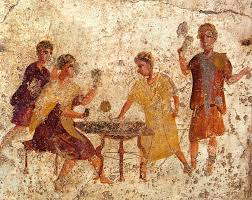
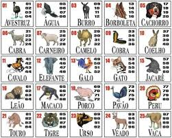

O Mercado das Apostas no Brasil
Da Antiguidade à era digital: riscos, leis e a psicologia do ganho no cenário nacional.
Origens e Evolução

As apostas remontam às civilizações da Antiguidade. Na China (2300 a.C.), foram encontrados azulejos que sugerem jogos de azar usados até para financiar obras públicas, como a Grande Muralha.
Para os Gregos e Romanos, o jogo era divino. Romanos apostavam em corridas de bigas e lutas de gladiadores, enquanto na Idade Média, as apostas em torneios de cavaleiros eram a base do entretenimento nobre.
Curiosidade: A palavra "Azar" vem do árabe "az-zahr", que significa "o dado".
Jogos Ancestrais
Astrágalos
Ancestral dos dados, eram feitos com ossos de calcanhar de animais. Usados na Grécia Antiga para prever o futuro e ganhar bens.
Keno Chinês
Surgido há mais de 2 mil anos, utilizava 120 caracteres de um poema clássico. Foi o precursor das loterias modernas e do bingo.
Hazard
Popular na Inglaterra do século XIV, era um jogo de dados complexo que deu origem ao moderno "Craps" dos cassinos atuais.
A Virada da Era Digital
Com a Revolução Industrial e o surgimento da probabilidade matemática no século XVII (Pascal e Fermat), o "palpite" virou ciência. Hoje, essa herança milenar cabe no seu bolso através dos algoritmos.
A PEC das Bets: Regulamentação
A regulamentação no Brasil busca trazer fiscalização e arrecadação sobre plataformas online. Com o crescimento explosivo dessas empresas, a lei visa combater fraudes, garantir o pagamento de impostos e proteger os usuários, especialmente os jovens, da promessa de dinheiro fácil e rápido.
Fiscalização de empresas e arrecadação tributária.
Criação de regras para reduzir a exploração de vulneráveis.
Educação e Realidade
Embora a lei traga ordem ao mercado, especialistas alertam: a regulamentação não elimina o risco de endividamento. O fenômeno das "Bets" reforça a necessidade urgente de Educação Financeira. Diferente de investimentos, a aposta é baseada na sorte, assim como o antigo Jogo do Bicho.
O Perigo da Recuperação: O maior gatilho para perdas graves é a tentativa desesperada de "recuperar" o dinheiro já perdido em novas apostas.
O Jogo do Bicho

Criado em 1892, tornou-se uma contravenção penal em 1941, mas permanece vivo na cultura popular pela tradição e fácil acesso informal.
Contexto Visual - Jogo do bicho
Registro documental: A Vale o Escrito: A Guerra do Jogo do Bicho - GloboPlay.
Contexto Visual - Jogo do bicho
Registro documental: A Vale o Escrito: A Guerra do Jogo do Bicho - GloboPlay.
Vício: O Ciclo das Apostas
Visão de "Benefício"
- Entretenimento e emoção momentânea.
- Sensação de ganho rápido (dopamina).
- Lucro para influenciadores e plataformas.
- Possibilidade de socialização em torno de jogos.
Consequências Reais
- Perda total de controle financeiro e dívidas.
- Saúde Mental: Ansiedade, depressão e culpa.
- Conflitos familiares e isolamento social.
- Queda drástica no desempenho escolar e profissional.
"O vício ignora a lógica: o apostador continua jogando mesmo ciente do prejuízo. Reconhecer o limite é o primeiro passo para buscar ajuda."
Arena Interativa
Simulador de Probabilidade: Realidade vs Marketing
Nota: O modo influencer demonstra manipulação de divulgação. No modo real, a banca sempre vence.